管理系統驗證
以公正、客觀及獨立方式，對組織之管理系統進行稽核與驗證。
驗證範圍
AISML 提供下列管理系統驗證方案：
- AIMS｜ISO/IEC 42001 人工智慧管理系統
- ISMS｜ISO/IEC 27001 資訊安全管理系統
- PIMS｜ISO/IEC 27701 隱私資訊管理系統
- CMS｜ISO 37301 合規管理系統
證書僅表示驗證客戶於證書範圍內之管理系統符合適用驗證準則，不表示對其產品、服務、流程結果或個別活動之符合性保證。
服務區域
AISML 目前以亞洲為主要服務區域，並受理全球各地組織之驗證申請。
認證狀態
AISML 目前提供之管理系統驗證屬自願性驗證，尚未取得認證機構之認證。所核發之證書不使用任何認證標誌，亦不宣稱受任何認證機構認可。
公正性
AISML 之公正性政策及保密承諾，詳見公開文件〈管理系統驗證機構公開聲明書〉。
驗證流程

- 提出申請：申請組織提供名稱、聯絡資訊、欲驗證之標準與範圍、場所、營運國家或地區、主要活動、產品或服務等資訊。
- 申請審查及合約審查：確認申請資訊完整，AISML 具備所需之適任性與資源，且無不可接受之公正性、保密或其他風險；雙方以驗證協議確認權利義務後，接受或婉拒申請。
- 第一階段稽核：確認管理系統之準備程度、範圍、場所、流程、外部要求、文件、內部稽核及管理審查，並規劃第二階段。
- 第二階段稽核：評估管理系統之實施與有效性，取得足以支持驗證決定之客觀證據。
- 驗證決定：審查稽核結果及不符合事項之處理情形後，作成授與或拒絕驗證之決定。
- 核發證書：授與驗證後核發證書，證書編號格式為
MSCB-方案代碼-年度-流水號，例如MSCB-ISMS-2026-001。 - 追查稽核及重新驗證稽核：驗證週期為 3 年，自驗證決定起算。第 1 年與第 2 年各執行追查稽核，除重新驗證年度外，每個日曆年至少 1 次；第 3 年證書到期前執行重新驗證稽核，以作成更新驗證之決定。
驗證狀態
驗證狀態依驗證決定變更，並同步更新於驗證文件查詢：
- 授與、維持、更新：管理系統持續符合要求並維持有效。
- 增列或減列驗證範圍：經申請審查及必要之稽核後調整。
- 暫時中止：管理系統持續或嚴重未符合要求、未依規定接受追查或重新驗證稽核、未處理不符合事項、誤用證書或標誌，或有其他影響驗證有效性之情形。暫時中止期間，不得宣稱其驗證有效。
- 恢復：造成暫時中止之原因已消除，並有足以支持恢復之證據；必要時執行特殊稽核。
- 終止：暫時中止原因未於期限內消除、重大違反要求、拒絕配合必要之驗證活動、嚴重誤用證書或標誌，或其他無法維持驗證有效性之情形。
證書與標誌使用
驗證客戶應依 AISML 規定使用證書、標誌及驗證引用，不得以誤導方式暗示未涵蓋之範圍、產品、服務或場所已獲驗證。AISML 發現誤用時，得要求修正、停止使用或公開更正，必要時暫時中止或終止驗證。
如何申請
請透過聯絡我們與 AISML 聯繫。〔待提供：申請方式〕
資訊請求
對驗證服務、特定證書之驗證狀態或本頁內容有疑問，請以電子郵件寄至 Service@aisml.org.tw。
申訴與抱怨之區別

申訴
申請組織、客戶或驗證客戶對 AISML 作成且與其有關之驗證決定有不同意見時，得提出申訴。
- AISML 確認收到申訴後，蒐集並查證必要資訊，並考量先前類似申訴之結果。
- 參與處理之人員與執行原稽核及作成原驗證決定之人員不同；通知申訴者之決定，由先前未涉入該申訴案件之人員作成，或經其審查與核准。
- 處理期間提供進度報告，結束後正式通知申訴結果。
- 提出申訴不會導致任何差別待遇。
抱怨
任何人或組織對 AISML 之驗證活動、驗證客戶之管理系統、證書或標誌使用、公正性、保密性或服務品質有不滿時，得提出抱怨。
- AISML 先確認抱怨是否與其負責之驗證活動有關；有關者予以處理，無關者於適當範圍內回覆。
- 抱怨涉及驗證客戶時，調查會考量該客戶管理系統之有效性，並於適當時間向該客戶詢問；必要時調整稽核安排或驗證狀態。
- 通知抱怨者之決定，由先前未涉入抱怨主題之人員作成，或經其審查與核准；在可行時提供進度與結果，並於結束後正式通知。
- 是否公開抱怨案件及其決議，以及公開程度，由 AISML 與客戶及抱怨者共同決定。
- 提出抱怨不會導致任何差別待遇，抱怨者及抱怨內容依保密要求處理。
申訴及抱怨請以電子郵件寄至 Service@aisml.org.tw，並說明提出人、聯絡方式、涉及之證書或案件及事實描述。